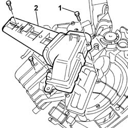
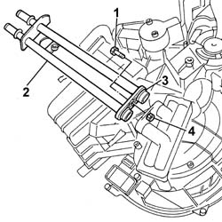
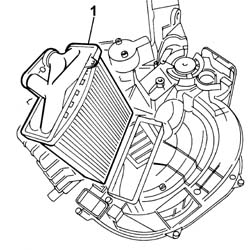

5040C54 air conditioner heater radiator - r+r with air conditioner box removed
- Path
- Procedures > 50 AUXILIARY UNITS > 5040 AIR CONDITIONING CASING AND COMPONENTS > 5040C air conditioner box and components > 5040C54 air conditioner heater radiator - r+r with air conditioner box removed
- Kind
- repair procedure (removal / refitting; the operation number is the code)
- Applies to
- all engines; all production periods
- Interactive page
- https://sloeber94.github.io/elrnDB-fPnd/en/#/2752896
Applies to: all engines; all production periods
 Removing
Removing
 Refitting
RefittingRemove the soundproofing trim.
1. Undo the retaining bolts.
2. Remove the pipe shield.

Applies to: all engines; all production periods
1. Undo the retaining bolt.
2. Remove the water supply and return pipes on the radiator.
3. Recover the seals on the pipes.
4. Recover the fixing nut.

Applies to: all engines; all production periods
1. Release the retaining clips on the air conditioner casing and remove the air conditioner radiator.

Applies to: all engines; all production periods
Refitting
RemovingCheck the condition of the radiator seal and if necessary replace it.
Fit the radiator and check that it is secure.
Check the condition of the seals on the water supply and return pipes, and if necessary replace them.
Fit the water supply and return pipes on the radiator.
Fit the nut in its seating on the radiator.
Tighten the retaining bolt.
Fit the pipe shield and tighten the fixing bolts.
Check the condition of the soundproofing trim, and if necessary replace it.
Fit the soundproofing trim.